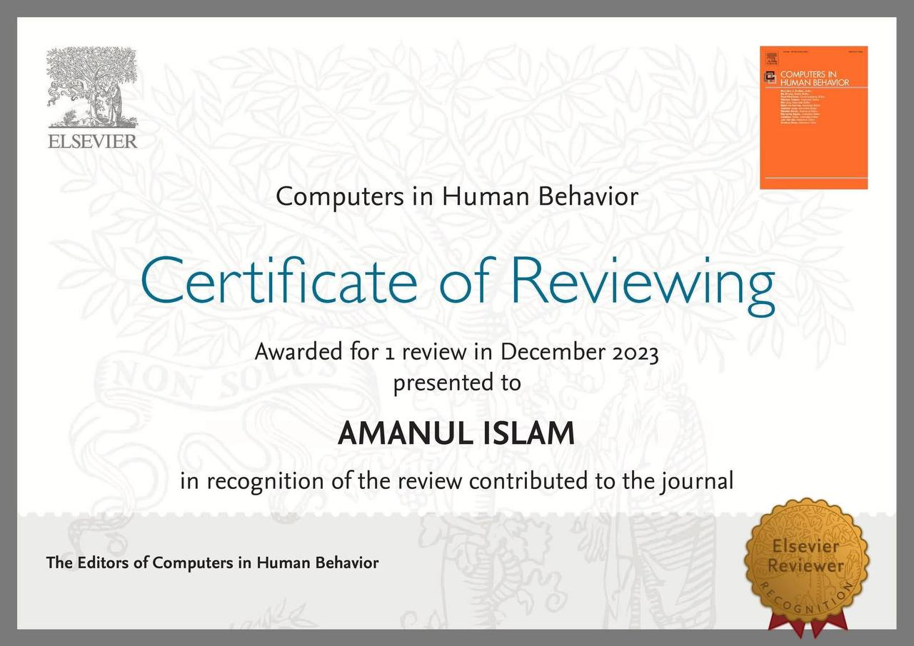
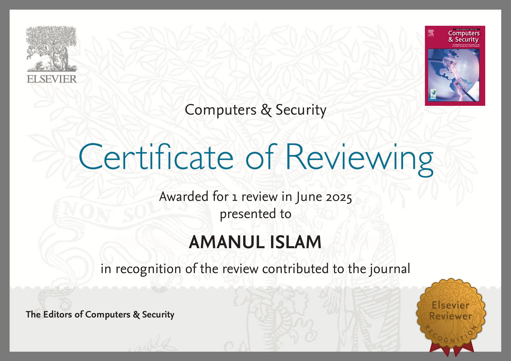
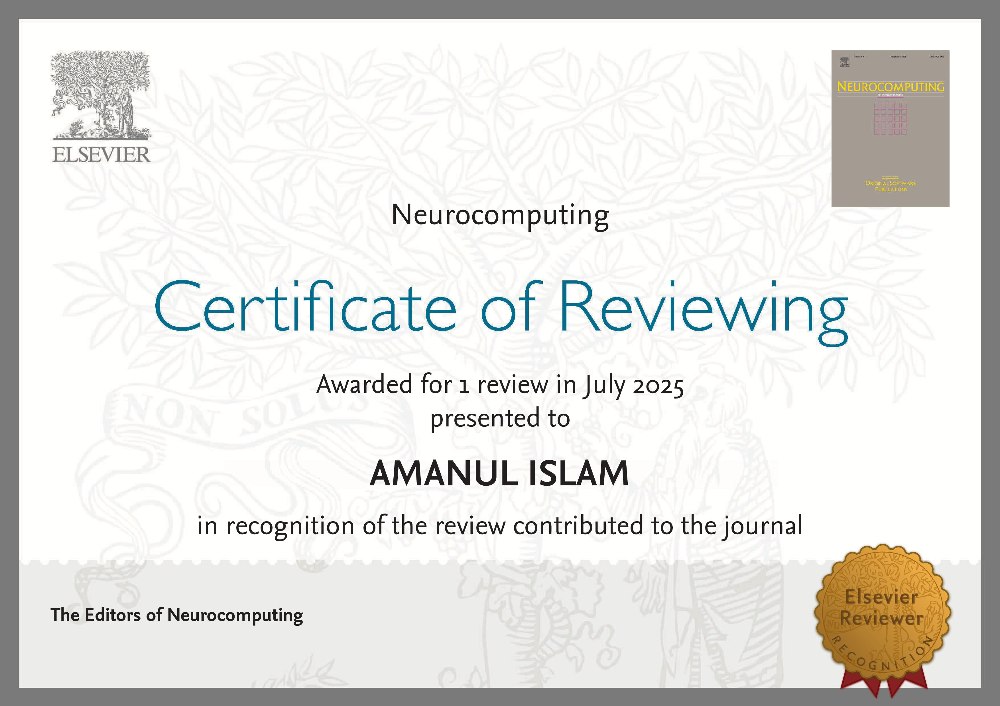
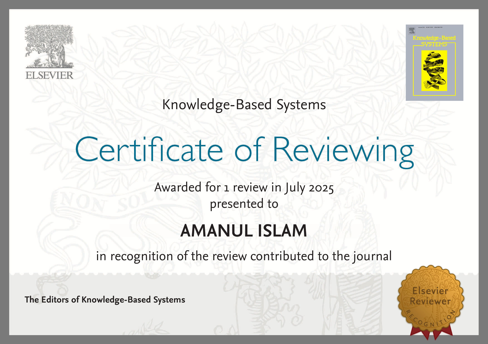
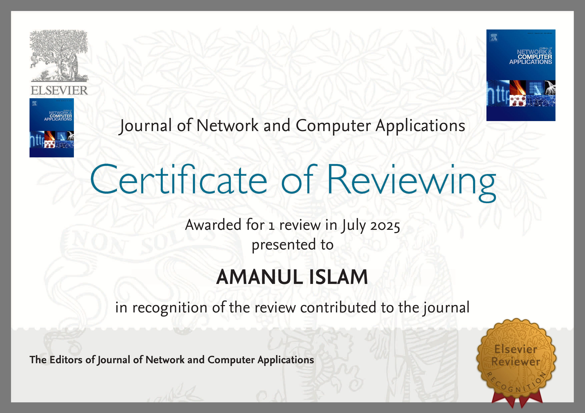
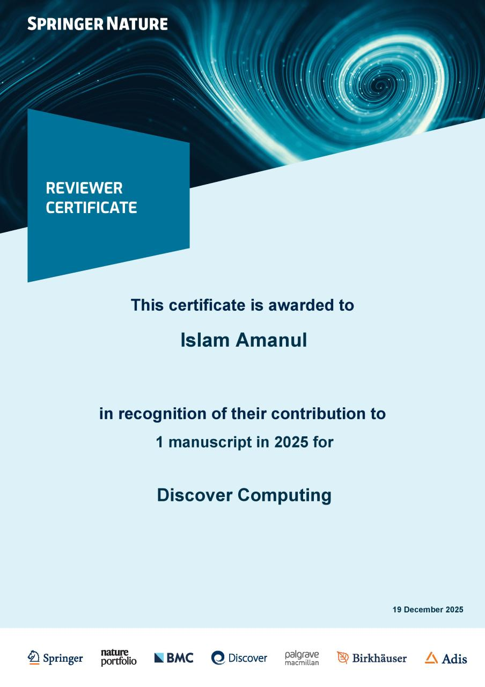

I have had the privilege of contributing to the peer-review process of several prestigious journals and serving as an Associate Editor and Editorial Board member. Below is a list of certificates recognizing my role as a reviewer, which reflects my commitment to academic excellence and maintaining research integrity.
Associate Editor and Editorial Board Member
-
NeuroData


Editorial Board Member
-
Contemporary Education and Teaching Research
Review Recognitions
- Certificate of Reviewing from Computers in Human Behavior (Elsevier), awarded in December 2023.
- Certificate of Reviewing from Computers & Security (Elsevier), awarded in June 2025.
- Certificate of Reviewing from Neurocomputing (Elsevier), awarded in July 2025.
- Certificate of Reviewing from Knowledge-Based Systems (Elsevier), awarded in July 2025.
- Certificate of Reviewing from Journal of Network and Computer Applications (Elsevier), awarded in July 2025.
- Certificate of Reviewing from Journal of Information Security and Applications (Elsevier), awarded in November 2025.
- Certificate of Reviewing from Journal of BioMedical Engineering OnLine (Springernature), awarded in August 2025.
- Certificate of Review from Cluster Computing (Springer Nature), awarded in 2025.
- Certificate of Review from Discover Computing (Springer Nature), awarded in 2025.
Certificate Images
-
Computers in Human Behavior

-
Computers & Security

-
Neurocomputing

-
Knowledge-Based Systems

-
Journal of Network and Computer Applications

-
Journal of Information Security and Applications
-
Journal of BioMedical Engineering OnLine

-
Cluster Computing
-
Discover Computing
